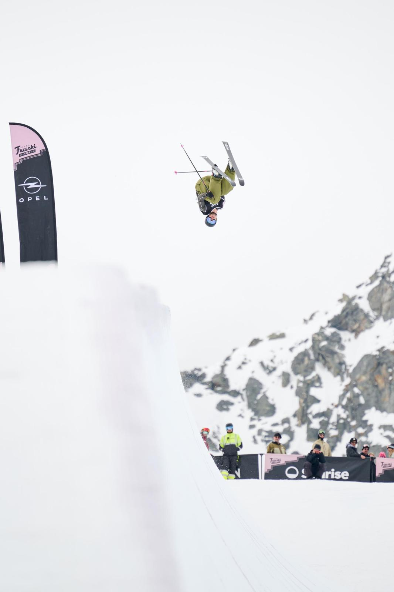
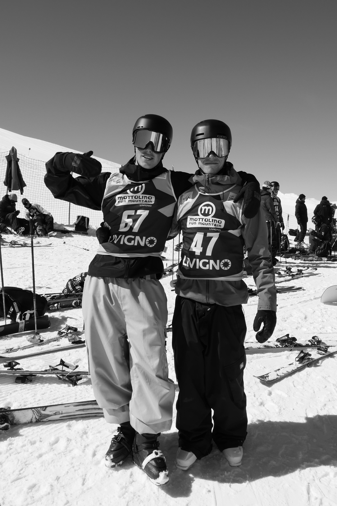
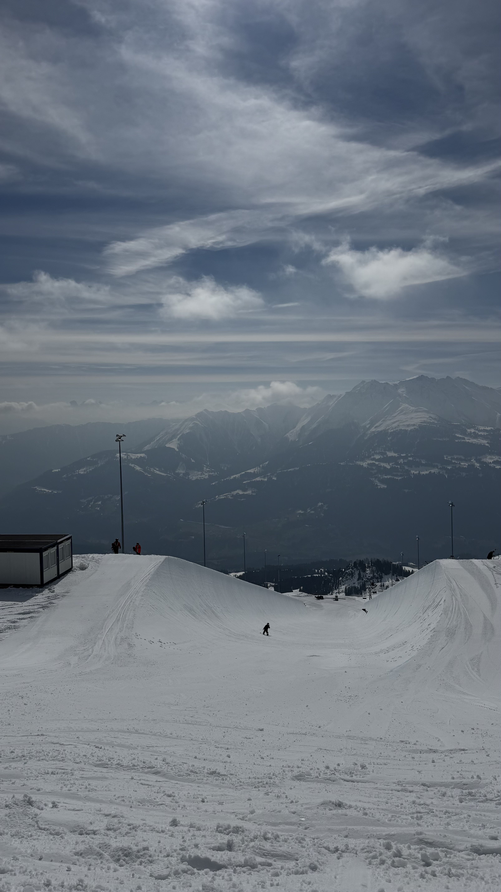
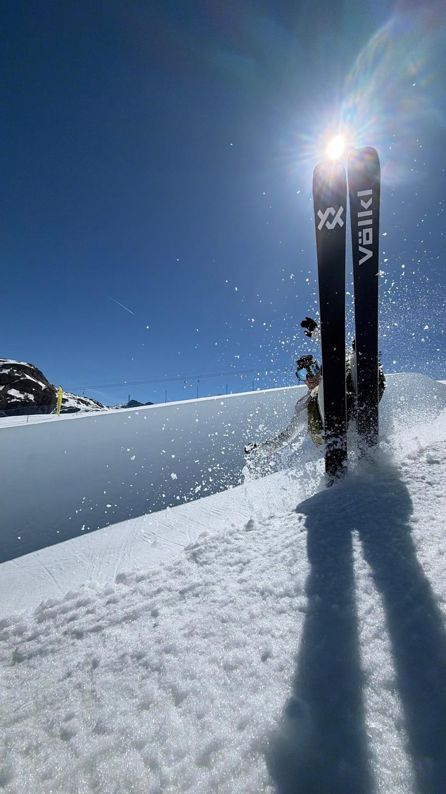
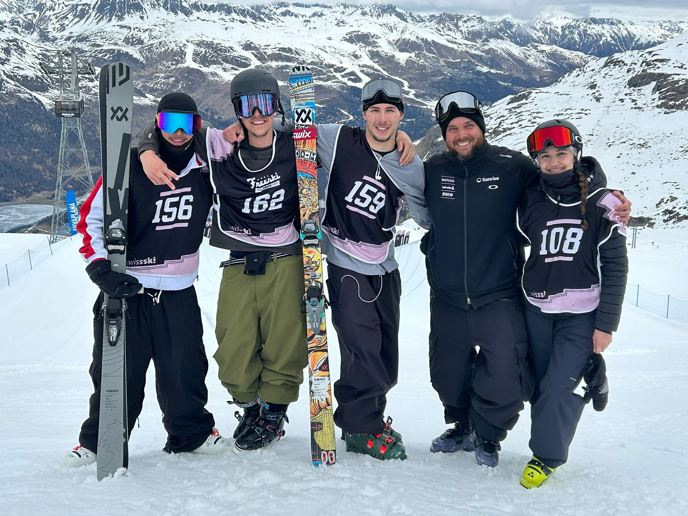
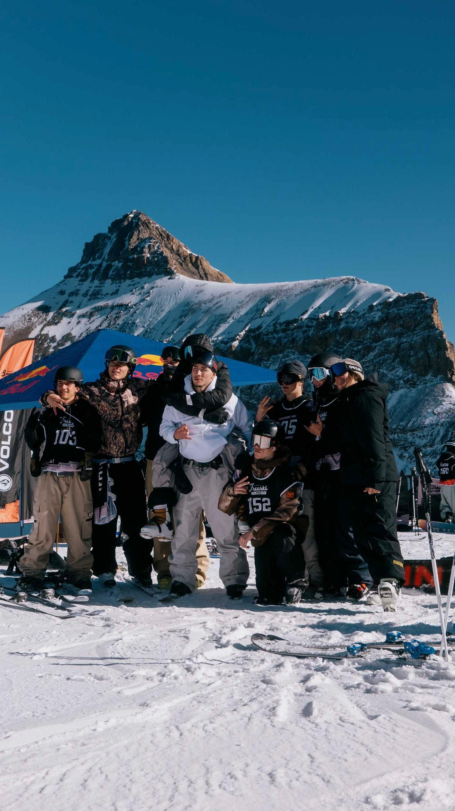
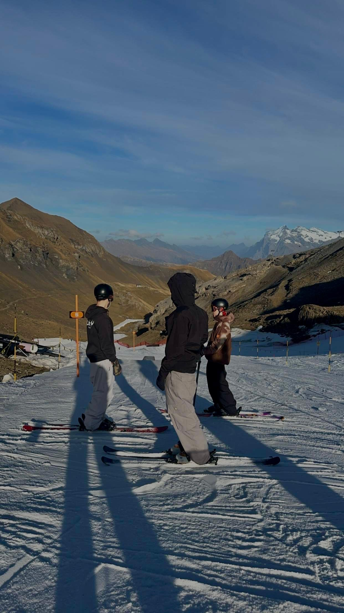

Originaire de Charmey, skieur freestyle depuis l'âge de 12 ans. Formé à la Sportmittelschule d'Engelberg, aujourd'hui pleinement engagé dans le programme de développement halfpipe mis en place par Swiss‑Ski.

Je pratique le ski freestyle depuis mes 12 ans — avant ça, j'ai longtemps fait du ski de fond, mais je voulais toujours faire des sauts et des figures. J'ai été sélectionné dans les cadres ski romand, où j'ai passé trois ans à m'entraîner et à progresser. En mars 2022, j'ai passé avec succès les sélections pour intégrer la Sportmittelschule d'Engelberg, où j'étudie depuis août 2022 — une infrastructure qui me permet de m'entraîner pour réaliser mes rêves tout en assurant mon avenir professionnel.
Fin 2025, j'ai fait le choix de me réorienter entièrement vers le halfpipe. Un virage payant : dès ma première saison dans la discipline, intégré au programme d'entraînement spécifique mis en place par Swiss‑Ski, j'ai accumulé assez de points FIS pour viser mes premières Coupes du monde.
11ᵉ FIS Schilthorn (Big Air) · 9ᵉ World Rookie Tour à Livigno (Slopestyle) · qualification aux championnats du monde juniors · 21ᵉ Europa Cup Premium à Corvatsch (Big Air).
5ᵉ FIS Schilthorn (Slopestyle) · 2ᵉ Europa Cup Rail Event à Davos · 35ᵉ Europa Cup Big Air à Davos.
Réorientation complète vers le halfpipe : 4ᵉ place à Laax et 7ᵉ à Corvatsch en European Cup Premium — assez de points FIS pour viser mes premières Coupes du monde.


Approfondir ma préparation estivale et confirmer ma progression en halfpipe sur le circuit Europa Cup.
Intégrer les cadres Swiss‑Ski et participer à mes premières Coupes du monde.
Faire partie des meilleurs — tops 10 en World Cup, Jeux Olympiques et X‑Games.
Le ski freestyle de haut niveau représente un budget annuel dans les alentours de 30'000.- CHF entre école-sport, licences, camps, déplacements et matériel. Je suis motivé, ambitieux et passionné — chaque partenariat me permettrait de soulager financièrement mes parents et de continuer à me former tout en pratiquant mon sport.


